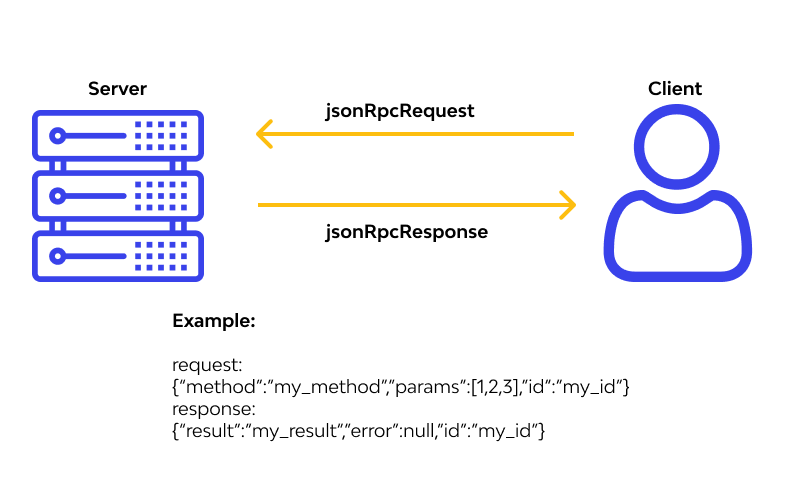
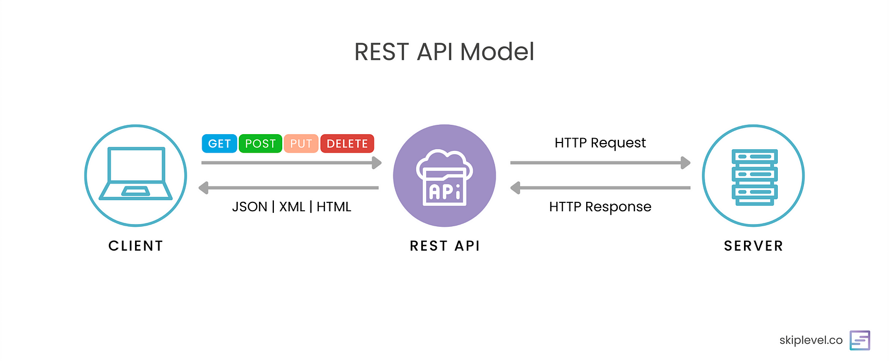

/
On this page
API Design (RPC and REST)
What is an API
APIs are mechanisms that enable two software components to communicate with each other using a set of definitions and protocols. Software developers use previously developed or third-party components to perform functions, so they don’t have to write everything from scratch.
APIs allow two separate, distributed applications or services to communicate without knowing the internals of how the other one works. These two applications or services may have little to do with one another except for a small data exchange.
APIs are also a common mechanism for the backend of a program (the logic component) to communicate with the frontend of a program (the display component). When you design web pages and web applications with APIs instead of tightly coupled integration, you ensure they can scale and change with less code rewriting.
REST vs RPC
Remote Procedure Call (RPC) and REST are ways to design APIs.
Both use HTTP as the underlying protocol. The most popular message formats in RPC and REST are JSON and XML (JSON is favored due to its readability and flexibility).
Developers can implement a RESTful or RPC API in any language they choose. So as long as the network communication element of the API conforms with the RESTful or RPC interface standard, you can write the rest of the code in any programming language.
Architecture Principles
In Remote Procedure Call (RPC), the client makes a remote function call on a server, as if it was locally to their software.

{kind=link}
In contrast, the REST client requests the server to perform an action on a specific server resource; actions are limited to create, read, update, and delete (CRUD) only and are conveyed as HTTP verbs or HTTP methods.

{kind=link}
RPC focuses on functions or actions, while REST focuses on resources or objects.
RPC Principles
These are typically followed by RPC systems, but are not standardized like REST though.
Remote invocation. An RPC call is made by a client to a function on the remote server as if it were called locally to the client.
Passing parameters. The client typically sends parameters to a server function, much the same as a local function.
Stubs. Function stubs exist on both the client and the server. On the client side, it makes the function call. On the server, it invokes the actual function.
REST Principles
These principles are standardized: a REST API must follow these principles to be classified as RESTful.
Client-server. The client-server architecture of REST decouples clients and servers. It treats them each as independent systems.
Stateless. The server keeps no record of the state of the client between client requests.
Cacheable. The client or intermediary systems may cache server responses based on whether a client specifies that the response may be cached.
Layered system. Intermediaries can exist between the client and the server. Both client and server have no knowledge of them and operate as if they were directly connected.
Uniform interface. The client and server communicate via a standardized set of instructions and messaging formats with the REST API. Resources are identified by their URL, and this URL is known as a REST API endpoint.
How They Work
In Remote Procedure Call (RPC), the client can perform any type of action, using a HTTP POST to call a specific function by name, and passes parameters as JSON objects. Client-side developers must know the function name and parameters in advance for RPC to work.
In REST, clients perform only CRUD operations, by using HTTP verbs like GET, POST, PUT, DELETE. Developers only need to know the server resource URLs and don’t have to be concerned with individual function names.
When to Use
Nowadays, REST web APIs are basically the norm; however, RPC hasn’t disappeared. A REST API is typically used in applications as it is easier for developers to understand and implement. However, RPC still exists and is used when it suits the use case better.
RPC is typically used to call remote functions on a server that require an action result. You can use it when you require complex calculations or want to trigger a remote procedure on the server, with the process hidden from the client. Examples:
- Take a picture with a remote device’s camera
- Use a machine learning algorithm on the server to identify fraud
- Transfer money from one account to another on a remote banking system
- Restart a server remotely
REST API is typically used to perform create, read, update, and delete (CRUD) operations on a data object on a server. This makes REST APIs a good fit for cases when server data and data structures need to be exposed uniformly. Examples:
- Add a product to a database
- Retrieve the contents of a music playlist
- Update a person’s address
- Delete a blog post